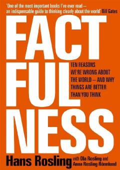

FDunyo haqidagi noto'g'ri tasavvurlarni faktlar yordamida tuzatish bo'yicha qo'llanma.
Ushbu kitob dunyo haqidagi noto'g'ri tushunchalarimizni tahlil qilib, faktlarga asoslangan dunyoqarashni shakllantirishga yordam beradi. Muallif inson tafakkuridagi o'nta instinktni tushuntirib, ularni qanday yengish va ma'lumotlarni to'g'ri talqin qilish yo'llarini ko'rsatib beradi.